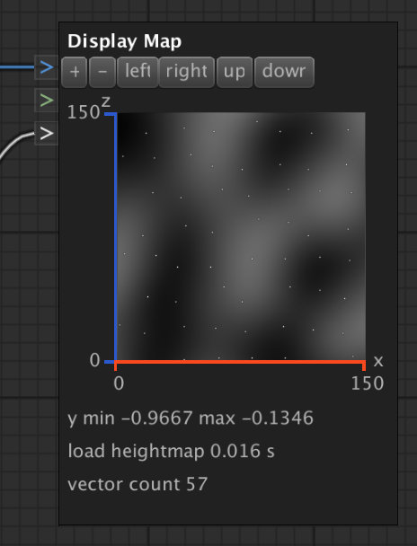

DisplayMapNode
The DisplayMapNode displays height maps and vectors along the x and z coordinates.
If no color is connected it shows a grey scale map for values between [-1, 1].
Uses red for values > 1. Uses blue for values < -1. Uses magenta for float.NaN values.
Vector positions are drawn using white.
Options:
|
+ and -
|
Resize the node.
|
|
left / right / up / down
|
Offsets the display position along x and z.
|
|
value
|
The height map to display.
|
|
color
|
The color or color gradient for the height map.
|
|
vector
|
The vectors to display on top of a height map.
|
Example:
